OECD 주요 국가들의 하루 시간 소비 패턴
게시: 2021-04-08T06:30:55+09:00
이번 글은 아래의 "How do people across the world spend their time and what does this tell us about living conditions?" 이라는 글을 발췌 번역하고 또 거기서 제공한 OCED 및 중국 인도 등 몇몇 주요 국가 국민들의 일상 생활 패턴에 대한 데이터를 그래프로 보여드리는 것입니다.
ourworldindata.org/time-use-living-conditions
--본문 시작-- 이 차트에서 우리는 몇가지 공통적인 활동에 걸쳐 하루를 어떻게 보내는지 비교했습니다. 데이터는 사람들이 특정일에 어떻게 시간을 썼는지에 대해 OECD가 설문조사로 얻은 자료와 함께, 지난 주 특정일에 어떤 활동을 하며 시간을 보냈는지에 대한 다른 몇몇 일반적 설문조사에서 얻은 것입니다. 이 차트에서 가장 먼저 볼 수 있는 것은 여러 국가에 걸쳐 진짜 비슷한 점이 많다는 것입니다. 이건 놀라운 일이 아닙니다. 대부분 우리는 하루를 '일, 휴식, 오락'으로 쪼개 쓰기 때문에 예측가능한 패턴이 몇가지 나옵니다. 우리는 하루 대부분을 일하고 자는데 씁니다. 하루 1440분 중 80~90%가 근로(paid work), 집안일, 레저, 식사, 수면에 소모됩니다.
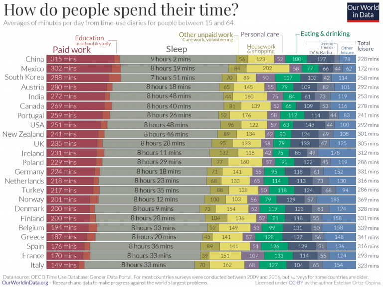
하지만 좀더 자세히 살펴보면, 중요한 차이도 몇가지 볼 수 있습니다. 가령 수면을 보십시요. 이 샘플 국가들 중에서는 한국인들이 평균 7시간 51분으로 가장 잠을 적게 잡니다. 그 그래프의 정반대편에는 미국과 인도가 있는데, 이 나라 사람들은 평균 1시간을 더 잡니다. 일도 큰 차이를 볼 수 있는 중요한 활동입니다. 근로 시간 길이로 분류를 해보면 중국과 멕시코 사람들은 평균적으로 이탈리아 및 프랑스 사람들보다 거의 2배의 시간을 일합니다. 일반적인 패턴으로는 부자 국가 사람들이 일을 더 적게 합니다. 이 차트는 실직 상태이건 고용 상태이건 15세에서 64세 사람들을 대상으로 얻은 자료라는 점에 유의하십시요. 인구 및 교육, 경제 상황 등의 차이가 이런 근로 및 소요 시간에 있어서의 불평등을 만들어냅니다. 하지만 이 차트를 보면 그런 요소들로는 잘 설명이 안 되는 것도 있다는 것이 분명하게 나타납니다. 가령 영국은 프랑스보다 더 장시간 근로를 하지만 이 두 나라에서 사람들이 레저 활동에 보내는 시간은 비슷합니다. 문화적 차이도 그런 점에서 영향을 끼칩니다. 프랑스는 분명히 영국보다 더 많은 시간을 식사에 할애합니다. 그 점에서 이 차트는 흔히 생각하는 전형적인 음식 문화와 결을 같이 합니다. 프랑스, 그리스, 이탈리아 및 스페인은 다른 유럽국가들보다 더 긴 시간을 식사하는데 씁니다. 먹고 마시는데 가장 적은 시간을 쓰는 국가는 63분을 쓴 미국이었습니다. 국가 평균에서 벗어나는 것은 국가 내에서의 주요 불평등을 보여줍니다. 가령 레저 시간에 있어서의 성별 격차는 아직 큰 불평등이 존재하는 주요 부문입니다.
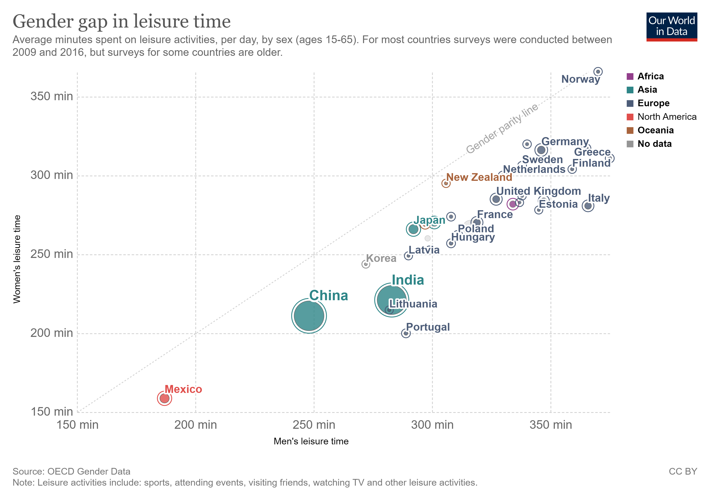
이 차트는 위에서 사용된 것과 동일한 시간 소비 데이터이지만 총 레저 시간을 남녀별로 따로 보여줍니다. 가운데의 점선으로 된 사선이 '성별 동등성(gender parity)' 입니다. 그러니까 한 국가가 저 사선에서 멀리 떨어질 수록 성별 격차가 큰 것입니다. 보시다시피 모든 국가에서 남자가 여자보다 더 많은 레저 시간을 보냅니다. 그러나 어떤 국가에서는 그 격차가 훨씬 큽니다. 노르웨이에서는 그 격차가 매우 작고, 포르투갈에서는 남자가 여자보다 50% 더 많은 시간을 레저 활동에 보냅니다. (레저 시간에는 스포츠, 행사 참여, 친구 방문, TV 시청, 기타 다른 레저 활동이 포함됩니다.) 이 레저 시간에서의 불평등을 야기하는 주원인은 비임금노동(unpaid work)입니다. 다른 포스팅에서 설명하겠지만, 여성이 훨씬 더 많은 시간을 그런 비임금노동에 쓰기 때문에 레저 활동을 할 시간이 적은 것입니다. 왜 시간 소비의 차이에 대해 신경써야 할까요? 우리 모두는 똑같은 '시간 예산'을 받고 태어납니다. 1년 365일 하루 24시간이지요. 하지만 우리 모두가 가장 좋아하는 일에 시간을 쓸 수 있는 것은 아닙니다. 좋아하는 일에 시간을 쓸 자유에 차이가 있다는 것이 생활 여건을 연구하는데 있어서 시간 소비 데이터가 중요한 이유입니다. 영국 시간 소비 연구 센터(Centre for Time Use Research)에서는 시간 소비와 복지의 상관 관계를 알아보기 위해, 시간 소비 설문 응답자들에게 어떤 항목을 즐기는 정도를 1에서 7까지로 평가하도록 해보았습니다. 이 차트는 Jonathan Gershuny 교수와 Oriel Sullivan 교수의 ‘What We Really Do All Day’라는 책에서 응용한 것인데, 그 결과를 보여줍니다. 이 차트는 각 활동에 대한 평균적인 호감 정도를 보여줍니다.
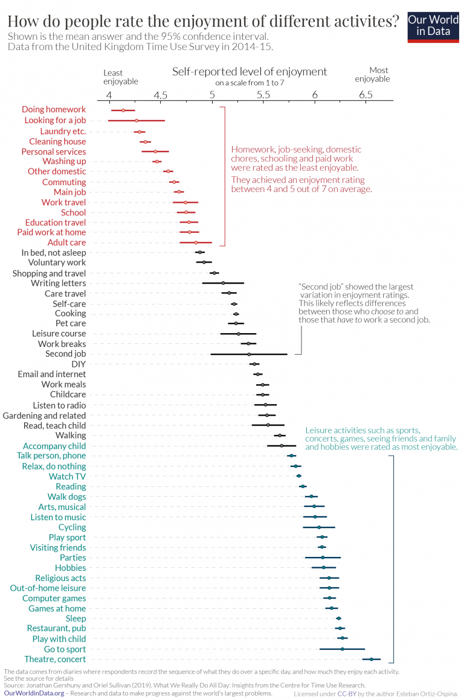
사람들이 가장 즐기는 활동은 외식, 수면, 스포츠 경기에 가는 것, 컴퓨터 게임이나 문화 활동 참석 등의 레저 활동과 휴식임을 알 수 있습니다. 가장 낮은 점수를 받은 활동은 학교 숙제를 하는 것과 구직 활동, 그리고 가사노동이었습니다. 사람들이 호감 정도에서 가장 큰 차이를 보여준 활동은 '제2 직업(Second Job)'이었습니다. 이는 어떤 사람들은 좋아서 두번째 직업을 갖는 반면, 어떤 사람들은 경제적 필요 때문에 어쩔 수 없이 하기 때문일 것입니다. --본문 끝-- 이하는 제가 좀더 자세히 보려고 이 사이트에서 제공한 엑셀파일을 가공해서 활동별 소비 시간을 그래프로 만든 것입니다. 대부분은 여러분이 알고 계시는 그대로인데, 제가 이번에 보고 놀란 점은 다음과 같습니다. 1) 개인 치장(personal care) 부분에 사용하는 시간은 흔히 생각하듯이 프랑스가 1위입니다. 그런데 한국이 2위네요? 일본은 3위입니다. 우리나라 사람들이 씻고 화장하고 하는데 이렇게 시간을 많이 쓰는 편인지 몰랐습니다. 외출이 잦다는 뜻일까요, 아니면 외모를 중시하기 때문일까요?
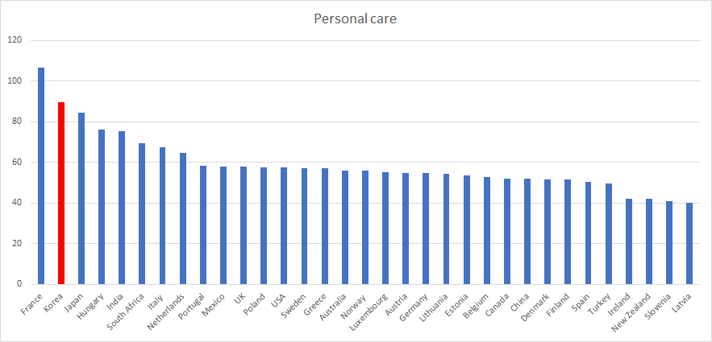
2) 가사노동(housework) 부분에서 우리나라가 꼴찌입니다. 이건 영광스러운 꼴찌이지요. 진공청소기나 세탁기, 식기세척기 등 가전제품이 많을 수록 가사노동에 들어가는 시간이 적을 것 같기 때문입니다. 그런데 또 생각해보니 이건 우리나라 사람들 주택이 좁고 노동 시간이 길어서 그런 것인가 싶기도 합니다. 그래서 외식이나 배달음식, 간편식을 많이 이용하기 때문인 것도 같고요. 아무튼 많은 지표에서 우리나라는 멕시코와 비슷한 위치에 놓인 경우가 많은데, 이 항목에서는 정말 극과 극, 멕시코는 1위 우리나라는 꼴찌네요.
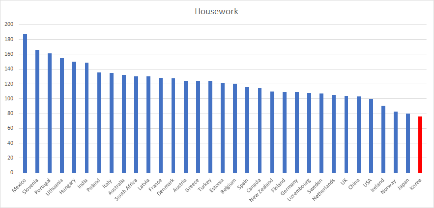
3) 친구들과 시간 보내는데 있어서 꼴찌인 나라가 일본입니다. 중국이 꼴찌에서 2번째이고요. 상위권은 남아공, 오스트리아, 덴마크, 인도 등 선진국과 비선진국이 뒤섞여 있네요. 일본 사회는 문제가 좀 있어 보입니다.
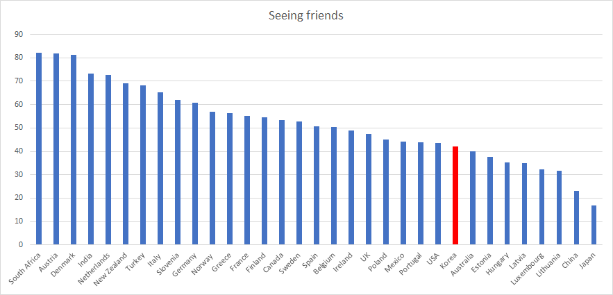
4) 전혀 뜻밖인 것이 쇼핑 시간에서 한국이 꼴찌에서 3위입니다. 보통 잘사는 나라들의 쇼핑 시간이 긴데 말입니다. 인터넷 쇼핑이 많아서 그런 것일까요? 이건 왜 그런지 전혀 모르겠습니다.
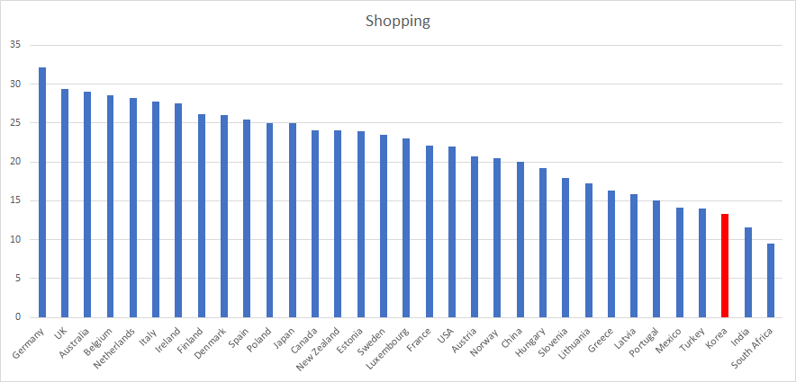
5) 스포츠 시간에서 의외로 한국이 꽤 상위권입니다. 이건 최근의 헬스장 열풍도 있겠습니다만, 아마도 한국 중년남녀들의 대표적 활동인 등산 때문이 아닌가 합니다. 서울은 세계적으로 드물게 도심지에 산이 있는 도시지요. 이건 좋은 일 같습니다. 저는 서울 관광하는 외국인 관광객들에게 '하이킹 서울'이라는 주제로 남산이나 인왕산, 북한산 정도를 1~2 시간 코스로 올라가도록 하는 것은 괜찮은 관광 상품 아닐까 합니다.
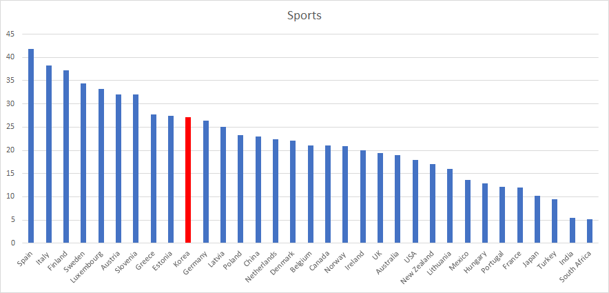
기타 나머지 차트는 뭐 뻔합니다. 공부시간 1등, 근로시간 상위권, 먹고 마시는 시간 상위권, 수면 시간 하위권 등입니다.
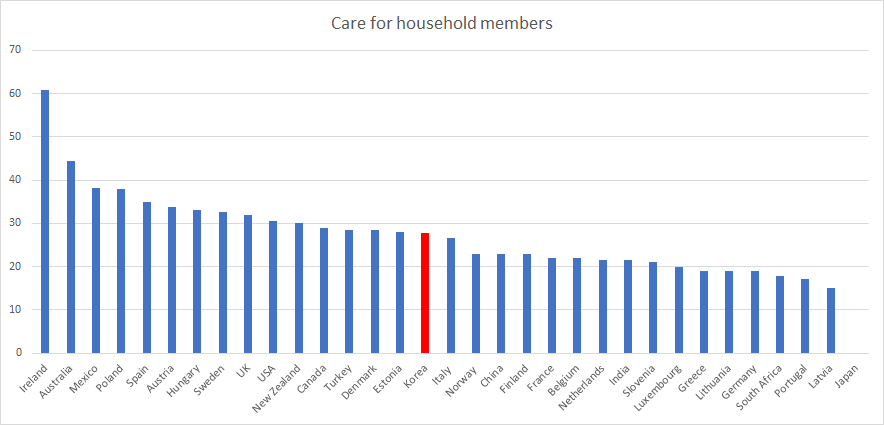 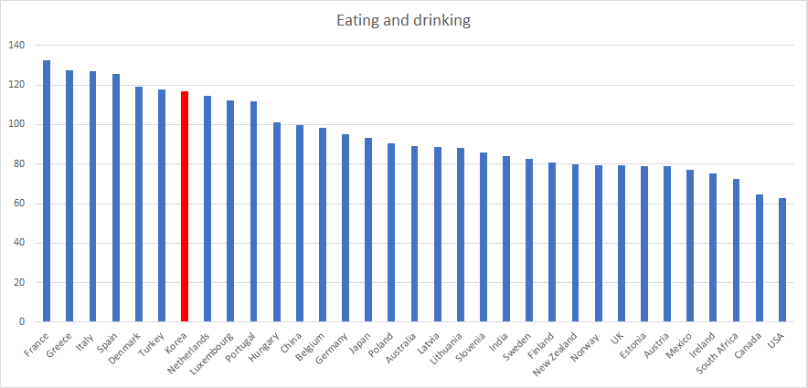 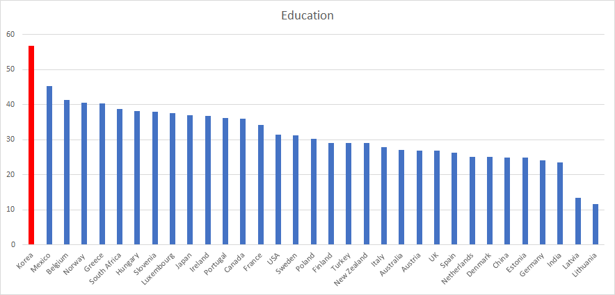 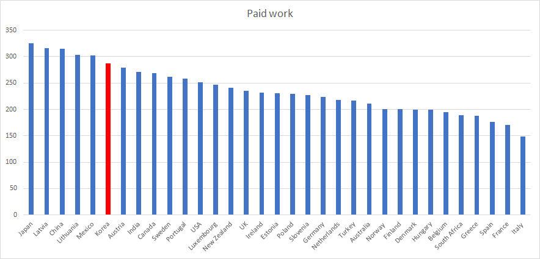 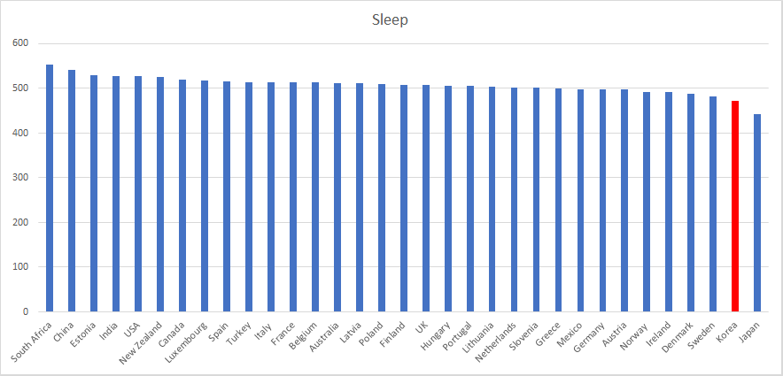 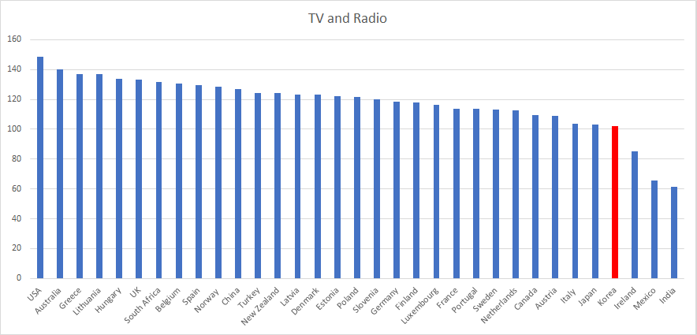